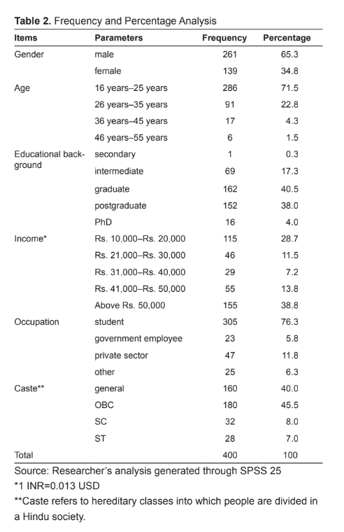

The Digital
Divide In India
What Is Digital Divide?
As the Internet continues to make inroads across the world, it is also creating a separation.
The Organisation for Economic Co-operation and Development (OECD) defines the digital divide as the “gap between individuals, households, businesses, and geographic areas at different socio-economic levels about both their opportunities to access information and communication technologies (ICTs) and to their use of the Internet for a wide variety of activities.”
Causes
Causes of the Digital Divide
Education: Investing in education is crucial to bridging the digital divide. People with low literacy levels are at a disadvantage in the digital world. Those with college degrees are ten times more likely to fully utilize the internet and computers in their daily lives compared to those with only a high school education or less.
Income Levels: Income disparities also worsen the digital divide. High-income individuals (earning $75,000 or more) are twenty times more likely to have internet access than low-income individuals (earning $30,000 or less). Wealthy families are ten times more likely to own computers and have high-speed internet at home compared to low-income families, who often see technology as a luxury due to their limited finances.
Geographical Restrictions: More economically developed countries have better access to technology and high-speed broadband due to their wealth, while less economically developed countries lack the necessary technology and infrastructure for high-speed internet. Within a country, urban areas typically have better internet access, such as 4G or fiber optic, compared to rural or mountainous regions.
Motivation and General Interest: Some individuals have the means, education, and computer literacy but lack interest in learning about computers and the internet. For some, technology is seen as a luxury, while others find it too complex to understand.
Digital Literacy: Developed nations have broader access to computers and high-speed internet, giving students attending schools with adequate technology an advantage over those without such exposure. In developing countries, the lack of physical access to technology widens the gap between those with access to information and those without.
Effects
Effects or Impact of the Digital Divide
Impact of Digital Divide on Economy: Access to telecommunication services is a driving force behind economic growth. A nation's economic productivity is significantly boosted by widespread internet usage. The ability to shop online reduces the hassle of commuting, and digital transactions provide a convenient way to empower economic activities. Unfortunately, developing countries that lack adequate integration of information and communication technology (ICT) experience a widening economic gap.
Impact of Digital Divide on Education: The internet serves as a vast repository of knowledge, offering numerous educational platforms for acquiring advanced skills. Access to ICT has been linked to academic success and the facilitation of exceptional scientific research. Education is a powerful tool for empowering individuals and society, and staying abreast of advancements in this dynamic sector is crucial for success
Impact of the Digital Divide on Social Interactions:Internet access fuels communication, with social media platforms like Facebook promoting engagement, relationship building, and connection with friends and family. Access to information becomes faster, reducing reliance on traditional newspapers. The technological revolution has dramatically transformed art and music, enriching societies that have embraced these changes. Bridging the digital divide is crucial for empowering developing countries to benefit from these advancements.
Impact of the Digital Divide on Society: Internet access fuels communication, with social media platforms like Facebook promoting engagement, relationship building, and connection with friends and family. Access to information becomes faster, reducing reliance on traditional newspapers. The technological revolution has dramatically transformed art and music, enriching societies that have embraced these changes. Bridging the digital divide is crucial for empowering developing countries to benefit from these advancements.
Digital Divide in Education:According to Education Superhighway, 17.6 million students require minimum bandwidth to support digital learning. The FCC E-rate program is assisting schools in obtaining affordable broadband connections, ensuring they are connected to the web. However, schools in rural areas face challenges due to the absence of pre-existing infrastructure, resulting from low returns on investment and the difficulty of installing fiber optic cables.
Teachers Lacking Technology-Based Skills: Simply having adequate technology and high-speed broadband access is insufficient to bridge the digital divide in education. Many teachers lack the training needed to effectively use these devices for facilitating digital learning. For meaningful, relevant, and focused learning, investing in the professional development and training of teachers is necessary.
Data & Statistics
Mobile Ownership & Use of internet.
State-wise gender divide
(%) individuals who have ever used the internet: The NFHS Report suggests that only 57.1 percent of the male population and 33.3 percent of the female population had ever used the internet. This gender gap was present across all states as demonstrated in the figure.The NFHS also provides data segregation based on the rural-urban divide. Whilst 72.5 percent of the urban males and 51.8 percent of the urban females have ever used the internet, only 48.7 percent of rural males and 24.6 percent of the rural females qualify for this condition.(Source: Data from NFHS 2019-21)
State-wise gender and rural/urban divide
(%) individuals who have ever used the internet: It is interesting to note that across all states urban males have the highest percentages, whilst rural females have the lowest percentage as demonstrated in the figure.(Source: Data from NFHS 2019-21)
Growth between 2015-16 and 2019-21
(%) Women having a mobile phone that they use: The data shows that there exists a clear gap in mobile phone ownership wherein the general trend is that a higher percentage of urban women own mobile phones as compared to rural women. In some states and union territories such as Kerala, Ladakh, Delhi, Andaman, and Nicobar, the trend is reversed and rural women have greater access to mobile phones. There has been a clear growth in mobile phone ownership amongst women in India between 2015–16 and 2019–21
State-wise Rural-Urban divide
(%) Women having a mobile phone that they use: The NFHS shows that there exists a clear gap in mobile phone ownership wherein the general trend is that a higher percentage of urban women own mobile phones as compared to rural women. In some states and union territories such as Kerala, Ladakh, Delhi, Andaman, and Nicobar, the trend is reversed and rural women have greater access to mobile phones. It is also important to note here that further gap in usage is based on age and caste group.
The patterns of Internet users are varied across the regions in India. The northern, western, and southern regions have the maximum number of Internet users while north-eastern regions are incredibly doing better than the surrounding region. The number of subscribers is hundred percent across the urban landscapes in the following regions; Kerala, Karnataka, Rajasthan, Punjab, Gujarat, Assam, North-East, and Himachal Pradesh while the lowest number of Internet users is found in Bihar, UP, and Madhya Pradesh. The following regions: Andhra Pradesh, Delhi, Gujarat, Himachal Pradesh, Karnataka, Kerala, Maharashtra, Punjab, and Tamil Nadu have higher numbers than the national average number of Internet subscribers in the country. Except for Delhi and Tamil Nadu, less than fifty percent rural population across the regions accessed the Internet. Haryana, Bihar, J&K, Madhya Pradesh, Maharashtra, Orissa, Tamil Nadu, and UP (East) have accessed fewer numbers of Internet subscribers than the national average.
Some Interesting Charts
FIVE SEGMENTS OF INTERNET USERS IN RURAL INDIA
Exhibit 1: Rural Internet users in India are today almost exclusively male (98%), a different pattern from that of cities, where men dominate (79%) but women are also online in growing numbers (21%). More than 60% of rural users have been online for less than two years, which means most rural users are still relatively immature digitally, and their usage patterns can be expected to evolve as they gain experience. Know More..
DIGITAL INFLUENCE ON URBAN AND RURAL CONSUMERS
Exhibit 2: The degree of digital influence and actual online purchasing differs across categories. In several product categories, including mobile devices, PCs, and laptops, the Internet’s influence in rural areas is approaching the same level as in cities. In other categories, such as consumer durables, autos, apparel, and entertainment, it is still far behind. Know More..

Globalisation
Digital Divide & Globalisation
Globalization is the term used to refer to the integration of goods, services, and culture among the nations of the world. Globalization is not necessarily a new phenomenon; in many ways, we have been experiencing globalization since the days of European colonization. Further advances in telecommunication and transportation technologies accelerated globalization. The advent of the the worldwide Internet has made all nations next-door neighbors.
Image: As of 2012, the Internet was being used in over 150 countries by a staggering 2.4 billion people worldwide, and growing.[1] From its initial beginnings in the United States in the 1970s to the development of the World Wide Web in the 1990s to the social networks and e-commerce of today, the Internet has continued to increase the integration between countries, making globalization a fact of life for citizens all over the world.
The chart above shows how Internet speeds compare in different countries:As the Internet continues to make inroads across the world, it is also creating a separation between those who have access to this global network and those who do not. This separation is of great concern.The digital divide can occur between countries, regions, or even neighborhoods.
The New Globalisation: Information technology has driven change on a global scale. Technology has given us the ability to integrate with people all over the world using digital tools. These tools have allowed businesses to broaden their labor pools, their markets, and even their operating hours. But they have also brought many new complications for businesses, which now must understand regulations, preferences, and cultures from many different nations. This new globalization has also exacerbated the digital divide.
Projects
One Laptop per Child: The One Laptop per Child (OLPC) initiative, launched in 2005, aimed to bridge the digital divide by providing affordable, durable laptops with a mesh network for remote areas. However, it faced challenges such as cultural differences, corruption, and competition, leading to unmet expectations. Despite setbacks, OLPC is adapting, currently working on delivering tablet computers. You can learn more about this Project here.
State Government IT Projects in India:
CARD Project: The Computer Aided Administration of Registration Department (CARD) project initiated by the government of Andhra Pradesh illustrates the effective use of IT to improve citizen–government interface. Under this project, land registration offices throughout Andhra Pradesh are now provided with computerized counters. Citizens can now complete registration formalities without much hassle. You can learn more about this initiative here.
Smart Card Based Driving Licence: Smart card-based driving licence with biometric identification, introduced by Government of Gujarat in the year 1999, is the largest smart card project operating in the world. It has a memory chip of 1 kb that is mapped to four parts partly to store permanent information and partly to maintain and operate dynamic information. As of now, about five million smart card driving licences have been issued in the state of Gujarat.
Sourkaryan and E–Seva: The government of Andhra Pradesh has successfully implemented two key projects for digital services. Sourkaryan in Visakhapatnam enables citizens to pay property taxes online and access government plans. Meanwhile, E–Seva Kendras in Hyderabad facilitate contactless transactions for various services like sales taxes and property taxes. Additionally, the state is advancing e-governance with initiatives like "Cyber Grameen," a rural broadband project by the Swarn Bharat Trust, aiming to bring IT services to remote areas for economic stimulation.
The Bhoomi Project: The Bhoomi Project of Karnataka state covers 6.7 million farmers and holds millions of records of land ownership. The project has earned the goodwill of many people and also international funding agencies. This project has reduced the delays involved in interacting with the bureaucratic hierarchy of the state revenue department. You can learn more about the Bhoomi Project here.
The Gyandoot Project: The Gyandoot Project in Madhya Pradesh's Dhar district establishes a rural information network with computer centers called "soochnalayas." These centers, present in every village, allow residents to access information on crops, water resources, etc. The government aims to expand the project to other districts, establishing 7,800 IT kiosks and 7,500 "Jan Shiksha" centers for computer literacy. Efforts are made to involve public libraries in the project's success through potential legislation. The Gyandoot Project is recognized internationally and has won the 2000 Stockholm Challenge Award for its innovative approach to grassroots development. You can learn more about the Gyandoot Project here.
FRIENDS Project: The state of Kerala launched the Fast, Reliable, Instant Efficient Network for Disbursement of Services (FRIENDS) Project to streamline tax payments, eliminating middlemen and queues. Serving 13 million people across 12 districts, FRIENDS treats citizens as valued customers. In Tamil Nadu, "N Louge," a private outfit, uses local loop technology and fiber optic lines in Madurai to provide low-cost tele-solutions, contributing to e-governance services. You can learn more about the FRIENDS Project here.
Lokamitra/Smart Project: Himachal Pradesh (HP), the hill state of the country, has initiated the Lokamitra project for the general public, especially those living in distant rural areas, easy access to government information and facilities of e–governance to their door steps. Lokamitra “Soochnalaya Kendras” (information centres) have been set up in 25 panchayat areas run by unemployed youth. These Kendras provide current information relating to the district and government information. The government of HP has also developed IT Vision 2010 in collaboration with NASSCOM (National Association of Software Companies) to convert the hill state into an IT destination and also make Simple–Moral–Accessible–Responsive and Transparent (SMART) Government.
Unnati Project: Unnati, is a project of Hindustan Petroleum Corporation Limited (HPCL) which strives to bridge the digital divide in schools by giving the rural students with poor economic and social background access to computer education. You can learn more about the Unnati Project here.